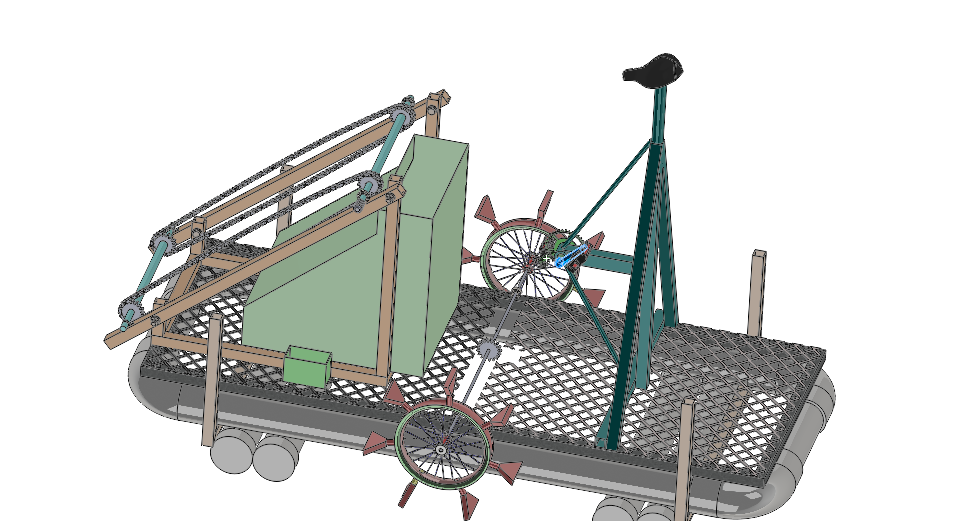

Gauthali
Gauthali is a fixed-wing VTOL with an estimated range of 60km and a payload carrying capacity of 1.5kg.
It will be used to deliver medical supplies like emergency medicines, vaccines, blood packets to the remote areas of Nepal.
The project was supported by UNICEF Innovation Fund, 2019 for developing low cost medical delivery drones to serve the remote parts of Nepal.
The successful pilot test of the drone was performed in the premises of Tribhuvan University in February 2021.
Fisto
Fisto is a toy fixed-wing RC drone developed primarily for two purposes: 1. To train novice pilots and 2. To teach school and college students the basics of fixed-wing plane design.
pilot test of the drone was performed in the premises of Tribhuvan University in October 2021.
Bhangera
Bhangera is a predecessor to Gauthali. It was initially designed to be a fixed-wing drone. However, it saw several crashes during take-off and landing. Thus, it was later modified to a VTOL quad plane. It was first developed in 2017 and modified in February 2020.
This drone has seen 50+ successful test flights.
Munal M 72
Munal M-72 is a fixed-wing RC plane developed as the final year project to meet requirements for the degree of Bachelor of Mechanical Engineering at Pulchowk Campus, Institute of Engineering, Tribhuvan University.
The pilot test of the drone was performed in June 2019.
BAT- Buoyancy Assisted Trash Cleaner

BAT was an engineering project designed and fabricated to be pedalled like a bicycle on stagnant water bodies such as lakes to automatically collect floating debris and weeds.
This project was awarded the Best Application Award in MechTRIX 2018.
Swachalit Yantra
Swachalit Yantra (Nepali: स्वचालित यन्त्र, literally ‘autonomous vehicle’ ) was the first mechatronics project I did. The project was demonstrated in the Science, Education and Technology fair in high shcool in 2013. The yantra could navigate on its own avoiding obstacles. The yantra also had onboard sensors and LCD display to show current temperature.